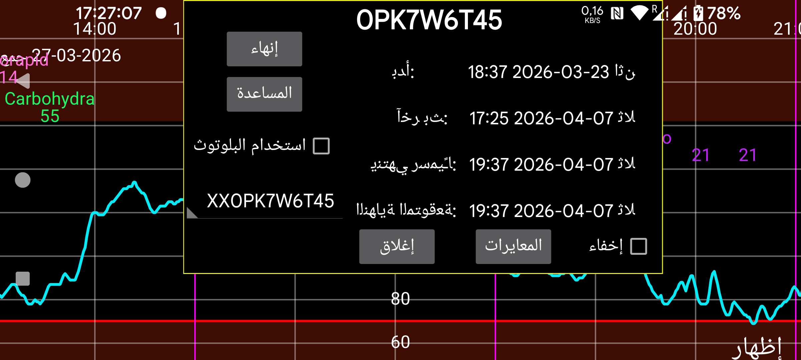

ar de es hi it ja nl pl ru tr uk uz en
تعرض معلومات عن المستشعرات عندما يعمل Juggluco بوصفه جهاز استنساخ لقيم البث:
بدأ في: الوقت الذي بدأ فيه المستشعر. في مستشعرات Libre يكون هذا قبل أول قيم الغلوكوز بساعة واحدة.
آخر مسح: آخر مرة جرى فيها مسح المستشعر. وحتى إذا جرى مسح المستشعر من دون تلقي بيانات بسبب خطأ في المستشعر أو خطأ استبدال المستشعر، فإن ذلك يُحتسب أيضًا على أنه مسح.
آخر بث: الطابع الزمني لأحدث قياس غلوكوز جرى استلامه عبر البلوتوث؛
ينتهي رسميًا: وقت الانتهاء كما يحدده مُنتِج المستشعر.
الانتهاء المتوقع: بعض المستشعرات تدوم عمليًا مدة أطول من وقت الانتهاء الرسمي. تدوم مستشعرات Libre 1 وLibre 2 وDexcom G7/ONE+ 12 ساعة إضافية، وتدوم مستشعرات Sibionics قرابة 10 أيام إضافية. أمّا مستشعرات Libre 3 فقط فلا تدوم أطول من وقت انتهائها الرسمي.
إخفاء: عند تحديد هذا الخيار، يُخفى هذا المنحنى. وإلى جانب إلغاء التحديد، يمكنك أيضًا جعل المنحنى مرئيًا من جديد بالضغط على «إظهار» أسفل يمين الشاشة.
إنهاء: إيقاف تلقي قيم الغلوكوز عبر البلوتوث من هذا المستشعر. وعندما تريد استخدامه مرة أخرى، تحتاج إلى مسح المستشعر مرة أخرى.
استخدام البلوتوث: وصّل هذا الجهاز مباشرةً عبر البلوتوث مع المستشعرات. يمكنك استخدام ذلك لتغيير الجهاز الذي يتصل مباشرةً بالمستشعرات. يجب إيقاف هذا الخيار في الجهاز الآخر الذي كان متصلًا مباشرةً بالمستشعر من قبل. كما تحتاج أيضًا إلى تغيير إعدادات الاستنساخ على كلا الجهازين بحيث تُرسل قيم البث في الاتجاه المعاكس. وإذا كان الطرف الآخر ساعة WearOS، فيمكنك تنفيذ ذلك بزر واحد: القائمة اليسرى→الساعة→إعداد WearOS→«اتصال مباشر بين الساعة والمستشعر».
عند استخدام عدة مستشعرات، يمكنك اختيار المستشعر الذي تريد عرض معلوماته.
المعايرات: إذا كنت قد حددت تسمية سكر الدم في القائمة اليسرى←الإعدادات←المعايرة وأدخلت قياسات سكر الدم من خلال القائمة الوسطى اليسرى←كمية جديدة، ولم تكن هذه القياسات مستبعَدة، فيمكنك الضغط على زر «المعايرات» للحصول على قائمة بالمعايرات التي أُجريت. انظر: https://www.juggluco.nl/Juggluco/index.html#calibration
فترة التهيئة: في مستشعرات Sibionics وAidex X يمكنك تغيير عدد دقائق فترة التهيئة. ستتجاهل جميع الوظائف البيانات خلال فترة التهيئة: المنحنى على الشاشة، والإحصاءات، والبيانات المُصدَّرة، والبيانات الظاهرة في خادم الويب. وينطبق ذلك أيضًا بأثر رجعي.